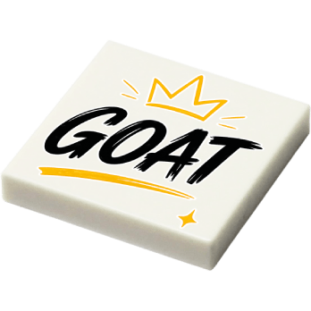

✨ Stage de première année
Mon stage chez Les Portraits de Felie
Une expérience entre communication digitale, création de contenus et e-commerce.
L’entreprise
J’ai réalisé mon stage chez Les Portraits de Felie, une entreprise située à Bègles et créée en mars 2020 par Florence Elie. Elle propose des cadeaux personnalisés réalisés à partir de figurines en briques LEGO et d’autres créations sur mesure.
Les produits sont principalement vendus sur le site internet de l’entreprise, mais les réseaux sociaux occupent également une place importante pour faire connaître les créations, échanger avec les clients et rassurer les personnes avant leur achat. La marque met en avant des cadeaux personnalisés, pensés pour créer une attention originale, familiale et émotionnelle.
Pendant mon stage, j’ai découvert le fonctionnement d’une petite entreprise e-commerce et participé à plusieurs missions liées à la communication digitale, à la création de contenus, à la mise en valeur des produits et à l’analyse des performances.

L’entreprise en quelques chiffres
Personnes dans l’équipe au quotidien
Commandes par mois en moyenne, avec une forte saisonnalité
Produits présents sur le site, entre briques et supports
Nouveaux produits créés environ chaque année
Mes missions
Site web & fiches produits
J’ai créé et mis en ligne une page de vente sur le site internet de l’entreprise via WordPress. Cette mission m’a permis de découvrir les étapes nécessaires à la publication d’un produit sur un site e-commerce : ajout des visuels, rédaction du contenu, intégration des informations utiles et mise en valeur du produit.
J’ai aussi créé et optimisé plusieurs fiches produits destinées à Google Merchant Center et aux campagnes Google Ads, afin de mieux comprendre comment les produits sont mis en avant dans une logique d’acquisition en ligne.
Voir la page de vente crééeCréation de contenus
J’ai participé à la création de contenus pour les réseaux sociaux de l’entreprise : rédaction de publications, recherche d’idées, création de visuels sur Photoshop, tournage et montage de vidéos sur CapCut.
Ces contenus étaient destinés à valoriser les produits, renforcer la visibilité de la marque et alimenter les différents réseaux sociaux de l’entreprise.
Marketing digital
J’ai participé à différentes actions de communication liées aux temps forts de l’année comme la fête des pères, la fin d’année scolaire, les mariages et le lancement de nouveaux produits.
Cette partie du stage m’a permis de mieux comprendre comment une entreprise prépare ses contenus et ses campagnes en fonction de son calendrier commercial.
Analyse & performances
J’ai utilisé plusieurs outils comme Metricool, Google Ads et Google Merchant Center pour observer les résultats des contenus, des fiches produits et des campagnes.
J’ai ainsi découvert l’importance des indicateurs de performance, comme les statistiques des publications ou les résultats des campagnes, pour améliorer une stratégie de communication digitale.
De l’idée à la commercialisation
Cette infographie présente les étapes observées pendant mon stage pour passer d’une idée de produit à sa mise en vente sur le site e-commerce.

Quelques chiffres clés
Ces chiffres correspondent aux missions réalisées pendant ma période de stage chez Les Portraits de Felie, notamment autour de la création de contenus, de la mise en ligne de produits et de la communication digitale.
Page de vente créée sur WordPress
Réseaux sociaux animés
Contenus publiés sur les réseaux sociaux
Fiches produits créées sur Google Merchant Center
Accessoires créés et mis en vente
Articles vendus liés aux accessoires créés et à la communication réalisée
Chiffre d’affaires généré sur la période suivie
1 110 €Ce chiffre d’affaires direct est lié aux accessoires créés et mis en vente pendant mon stage, ainsi qu’aux actions de communication réalisées pour les valoriser.
Un aperçu des performances numériques
Pendant mon stage, j’ai aussi découvert le suivi des performances grâce à Metricool. Cet outil permet d’analyser la visibilité des contenus publiés et de mieux comprendre les résultats obtenus sur les réseaux sociaux.
impressions relevées sur les réseaux sociaux pendant ma période de stage, avec une progression de +46,80 %.

Produits imaginés et créés durant mon stage
Durant mon stage, j’ai imaginé et créé 23 accessoires pour les cadeaux de fin d’année scolaire, aujourd’hui proposés à la vente sur le site des Portraits de Felie. J’ai également participé à leur mise en ligne afin de valoriser ces créations auprès des clients. Cette galerie présente un aperçu de quelques produits réalisés.

ATSEM en Or

Café + Patience

GOAT

Maîtresse Formidable

Merci Maître

Merci pour tout

MerSi Maître

Prof Masterclass

Super ATSEM

Super Maîtresse
Mes réalisations en images
Voici quelques images prises pendant mon stage : organisation des pièces, environnement de travail, création de contenus et mise en valeur des produits.

Découverte de l’atelier

Organisation des pièces

Création de contenus

Poste de travail numérique
Les outils utilisés
Découvrir les réseaux sociaux
Les Portraits de Felie
Une partie des contenus réalisés pendant mon stage est visible sur les différents réseaux sociaux de l'entreprise. Vous pouvez découvrir les publications, vidéos et visuels auxquels j'ai contribué.
Ce que ce stage m’a apporté
Avant ce stage, j’avais déjà étudié plusieurs notions liées à la communication numérique en cours. Cette expérience m’a permis de les voir appliquées dans un contexte professionnel et de comprendre comment elles sont utilisées au quotidien dans une entreprise.
J’ai découvert le fonctionnement d’un site e-commerce, la création de fiches produits, la gestion de contenus pour les réseaux sociaux, l’utilisation de Google Ads et Google Merchant Center ainsi que l’analyse des performances à travers différents indicateurs. J’ai également développé mon autonomie et appris à utiliser de nouveaux outils comme Metricool dans un cadre professionnel.
Ce stage a renforcé mon intérêt pour les métiers de la communication numérique et m’a permis de mieux comprendre les différentes facettes du marketing digital, de la création de contenu jusqu’à la mise en valeur des produits en ligne.
Remerciements
Je tiens à remercier Florence et Julie pour l’accueil qu’elles m’ont réservé durant ce stage, ainsi que pour l’opportunité et la confiance qu’elles m’ont accordées.
Leurs conseils, leur écoute, leur créativité, leur bonne humeur et leur humour ont rendu cette expérience à la fois enrichissante, motivante et agréable au quotidien.
Ce stage m’a permis d’apprendre dans un cadre bienveillant, tout en participant à de vrais projets de communication et de création. Je garde un très bon souvenir de cette expérience chez Les Portraits de Felie.